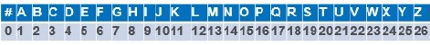

Assim para criptografar, o remetente vai utilizar a matriz Chave
C para codificar a mensagem e o destinatário vai utilizar a matriz
C^(-
1) para decodificá-la inicialmente a mensagem
M chega ao destinatário na forma codificada numérica. Assim transformamos essa mensagem codificada em uma matriz e com base na matriz
C Chave do código dada, determinaremos a sua inversa
C^(-
1)
E para a decodificaremos da mensagem, utilizaremos a seguinte fórmula:
(MxC)xC^(-1)= M
Onde:
(MxC) é a matriz Codificada
C é a matriz Chave para o Código
C^(-1) é a matriz Inversa do Código
M é a matriz da Mensagem
Após a decodificação, encontraremos uma matriz numérica (Mensagem), e teremos que convertê-la para a forma alfabética. Utilizaremos uma tabela para fazer as respectivas conversões de números em letras, confrome as associações a seguir:

O Espaçamento entra as palavras será representado pelo símbolo #.
O remetente e o destinatario devem conhecer essa tabela "alfa numerica", ou se for o caso , poderão criar uma nova tabela utilizando outras correspondências entrar números e letras.